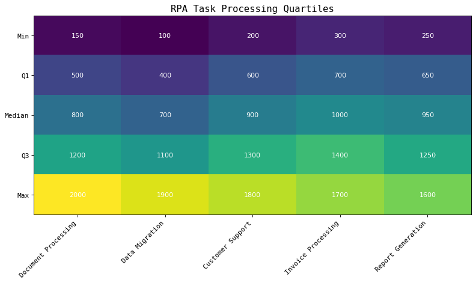
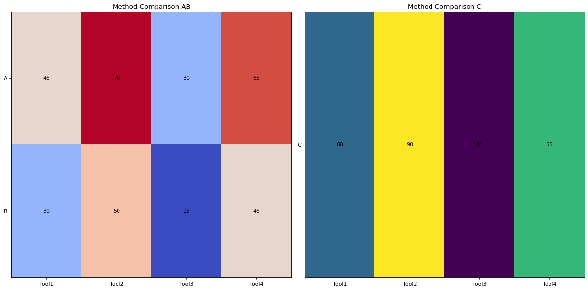

Total failure cases of factor "logical check": 2
| ID | Chart | Question | Additional Information | Pitfalls | Most relevant pitfall |
312.png |
 |
Is the 'Q3' value for 'Data Migration' less than the 'Q3' value for 'Report Generation'?
|
{
"Ground Truth": "True",
"Prediction": "Yes\n\n<Yes>"
}
|
### Potential Pitfalls in the Chart Image: 1. **Color Gradient Misinterpretation**: - The color gradient may mislead someone into thinking that visually darker or lighter colors correspond directly to numerical value comparisons without careful reading of the actual numbers. 2. **Text Clarity and Readability**: - While the data values are annotated within the cells, they might be hard to read if the text color does not contrast well enough against the background color for certain cells. 3. **Incorrect Axis Label Interpretation**: - The orientation of the axes could confuse readers who do not pay close attention; the 'Task Type' is on the x-axis while quartiles are on the y-axis. 4. **Comparison Across Non-Adjacent Cells**: - Comparing non-adjacent cell values like 'Q3' for 'Data Migration' and 'Report Generation' requires mental effort and can lead to errors if done hastily. --- ### Most Relevant Pitfall: The most relevant pitfall causing the error is the **incorrect axis label interpretation**. If one incorrectly interprets the axes, they might mistakenly compare the wrong values. For example, they might compare a different quartile instead of 'Q3'. <most_relevant>Incorrect Axis Label Interpretation</most_relevant> |
Incorrect Axis Label Interpretation |
320.png |
 |
Is the value for Tool1 in method C greater than the value for Tool3 in method B?
|
{
"Ground Truth": "True",
"Prediction": "Yes"
}
|
To address the potential pitfalls in the chart image that could lead to the error: ### Potential Pitfalls: 1. **Color Perception Misleading**: The colors might mislead someone into thinking one value is higher or lower than another based on visual intensity rather than the actual numerical values. 2. **Labeling Ambiguity**: The labels and titles may not be entirely clear, which can cause confusion about which values correspond to which methods. 3. **Comparison Difficulty Across Subplots**: Comparing values across different subplots can be challenging because they use different color scales and visual representations. ### Most Relevant Pitfall: The most relevant pitfall here is the **labeling ambiguity**. While the values are annotated clearly within each cell, the model may have misunderstood the structure of the subplots or misinterpreted the labels associated with each value, leading to an incorrect comparison between the values for Tool1 in method C and Tool3 in method B. Thus, the most relevant pitfall is: <most_relevant>Labeling Ambiguity</most_relevant> |
Labeling Ambiguity |